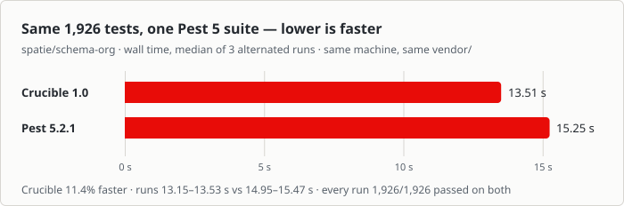

Crucible PHP
An independent, XML-free test framework for PHP 8.3+ — drop-in compatible with PHPUnit suites, engineered like the best runners of other ecosystems. Un framework de pruebas independiente y sin XML para PHP 8.3+ — compatible sin cambios con suites de PHPUnit, diseñado como los mejores runners de otros ecosistemas. Un framework di test indipendente e senza XML per PHP 8.3+ — compatibile senza modifiche con le suite PHPUnit, progettato come i migliori runner di altri ecosistemi.
Your PHPUnit suite, unchangedTu suite de PHPUnit, sin cambiosLa tua suite PHPUnit, senza modifiche
A real Laravel 13 application runs green — factories, RefreshDatabase,
Laravel's own constraints, mocks, --parallel — with the
composer remove as the only change to the project.
Una aplicación Laravel 13 real pasa en verde — factories, RefreshDatabase,
las restricciones propias de Laravel, mocks, --parallel — con el
composer remove como único cambio en el proyecto.
Una vera applicazione Laravel 13 passa in verde — factory, RefreshDatabase,
i vincoli di Laravel stesso, mock, --parallel — con il
composer remove come unica modifica al progetto.
| PHPUnit | Pest | Crucibledrop-indirectodiretto | |
|---|---|---|---|
| Runs an existing PHPUnit suite unchangedEjecuta una suite de PHPUnit existente sin cambiosEsegue una suite PHPUnit esistente senza modifiche | ✓ | ✓ | ✓ |
| Pest tests and PHPUnit classes in the same runPruebas de Pest y clases de PHPUnit en la misma ejecuciónTest Pest e classi PHPUnit nella stessa esecuzione | ✕ | ✓ | ✓ |
| Configuration in typed PHP, not XMLConfiguración en PHP tipado, no en XMLConfigurazione in PHP tipizzato, non in XML | ✕ | ✕ | ✓ |
| The current PHPUnit and Pest feature set, on PHP 8.3Las funciones actuales de PHPUnit y Pest, en PHP 8.3Le funzionalità attuali di PHPUnit e Pest, su PHP 8.3 | ✕† | ✕† | ✓ |
| Runs only the tests a change affects, with no coverage driverEjecuta solo las pruebas que un cambio afecta, sin driver de coberturaEsegue solo i test che una modifica interessa, senza driver di copertura | ✕ | ✕* | ✓ |
| A pass on retry reported as flaky, with quarantineUn pase en el reintento se informa como inestable, con cuarentenaUn passaggio al nuovo tentativo segnalato come instabile, con quarantena | ✕ | ✕* | ✓ |
| Property-based testing with shrinkingPruebas basadas en propiedades, con reducciónTest basati su proprietà, con riduzione | ✕ | ✕ | ✓ |
| Vitest in the same run and exit codeVitest en la misma ejecución y código de salidaVitest nella stessa esecuzione e codice di uscita | ✕ | ✕ | ✓ |
| No Composer dependencies at allNinguna dependencia de ComposerNessuna dipendenza Composer | ✕ | ✕ | ✓ |
† PHPUnit 13 requires PHP 8.4.1 and Pest 5 requires PHP 8.4; on 8.3 a project stays on PHPUnit 12 or Pest 4.† PHPUnit 13 requiere PHP 8.4.1 y Pest 5 requiere PHP 8.4; en 8.3 un proyecto se queda en PHPUnit 12 o Pest 4.† PHPUnit 13 richiede PHP 8.4.1 e Pest 5 richiede PHP 8.4; su 8.3 un progetto resta su PHPUnit 12 o Pest 4.
* Pest has partial versions: --dirty selects changed test files, --tia needs pcov or Xdebug, and --flaky retries failing tests.* Pest tiene versiones parciales: --dirty selecciona los archivos de prueba modificados, --tia necesita pcov o Xdebug, y --flaky reintenta las pruebas que fallan.* Pest ha versioni parziali: --dirty seleziona i file di test modificati, --tia richiede pcov o Xdebug, e --flaky riprova i test che falliscono.
The suite as a mapLa suite como un mapaLa suite come una mappa
One cell per test, reserved before the run starts, with Time, Tests and Legend panels and one progress bar. Real output from the real renderer — scroll it into view once, then hit replay as often as you like. Una celda por prueba, reservada antes de que empiece la ejecución, con los paneles Time, Tests y Legend y una barra de progreso. Salida real del renderizador real — desplázate hasta que aparezca una vez y luego presiona repetir tantas veces como quieras. Una cella per test, riservata prima che l'esecuzione inizi, con i pannelli Time, Tests e Legend e una barra di avanzamento. Output reale del renderer reale — scorri fino a farlo comparire una volta, poi premi replay tutte le volte che vuoi.
$ ./vendor/bin/crucibleAnd when it finishes — where the time went, in columns, with the verdict last: Y cuando termina — en qué se fue el tiempo, en columnas, con el veredicto al final: E quando finisce — dove è andato il tempo, in colonne, con il verdetto alla fine:
Passed
tests time share
tests/unit 28 0.027s ████████████
├─ Console 25 0.024s ████████████
│ ├─ Support 15 0.013s ██████······
│ │ └─ Str 15 0.013s ██████······
│ └─ Output 10 0.011s ██████······
│ ├─ TextPdf 3 0.009s █████·······
│ └─ Help 7 0.002s █···········
└─ CLI/Commands 3 0.003s ██··········
└─ CompletionCommand 3 0.003s ██··········
Tests: 28. Passed: 28, Failed: 0, Errors: 0, Skipped: 0, Incomplete: 0, Risky: 0. Time: 0.030s
OK
And on a real Pest 5 suite, faster than Pest itself — the same 1,926 tests, the same machine, alternated runs: Y en una suite real de Pest 5, más rápido que el propio Pest — las mismas 1.926 pruebas, la misma máquina, ejecuciones alternadas: E su una vera suite Pest 5, più veloce di Pest stesso — gli stessi 1.926 test, la stessa macchina, esecuzioni alternate:

Three dialects, one runTres dialectos, una ejecuciónTre dialetti, un'esecuzione
Mixed freely in one suite and one run — there is no mode to switch. Every sample is from
examples/,
and those files are run by the test suite: an example that stopped working turns the suite red.
Mezclados libremente en una suite y una ejecución — no hay ningún modo que cambiar. Cada ejemplo viene de
examples/,
y esos archivos los ejecuta la suite de pruebas: un ejemplo que deja de funcionar pone la suite en rojo.
Mescolati liberamente in una suite e in un'esecuzione — non c'è nessuna modalità da cambiare. Ogni esempio viene da
examples/,
e quei file li esegue la suite di test: un esempio che smette di funzionare fa diventare rossa la suite.
final class CalculatorTest extends TestCase
{
public function testAddsTwoNumbers(): void
{
$this->assertSame(4, 2 + 2);
}
}
*.pest.php files run nativelyEl expresivo — los archivos *.pest.php se ejecutan de forma nativaQuello espressivo — i file *.pest.php girano in modo nativo
test('a test is a description and a closure', function (): void {
expect(2 + 2)->toBe(4);
});
it('rounds up', function (): void {
expect((int) ceil(1.2))->toBe(2);
});
describe('expectations', function (): void {
it('chains', function (): void {
expect('crucible')->toBeString()->toHaveLength(8)->toStartWith('cru');
});
});
check() is a nameless test — the name comes from the source linecheck() es una prueba sin nombre — el nombre sale de la línea de códigocheck() è un test senza nome — il nome viene dalla riga di codice
check(fn () => expect(strtoupper('a'))->toBe('A'));
Use casesCasos de usoCasi d'uso
Drag or scroll sideways.Arrastra o desplázate lateralmente.Trascina o scorri lateralmente.
How it worksCómo funcionaCome funziona
Four steps, and the last one is a removal.Cuatro pasos, y el último es quitar algo.Quattro passaggi, e l'ultimo è togliere qualcosa.
InstallInstalarInstalla
composer require --dev cruciblephp/cruciblecomposer require --dev cruciblephp/cruciblecomposer require --dev cruciblephp/crucible
ConvertConvertirConverti
crucible migrate-config converts phpunit.xml and reports anything it could not translate.crucible migrate-config convierte phpunit.xml e informa de todo lo que no pudo traducir.crucible migrate-config converte phpunit.xml e segnala tutto ciò che non ha potuto tradurre.
RunEjecutarEsegui
./vendor/bin/crucible — the suite should be green../vendor/bin/crucible — la suite debería estar en verde../vendor/bin/crucible — la suite dovrebbe essere verde.
RemoveQuitarRimuovi
composer remove phpunit/phpunit turns on the compatibility aliases, so PHPUnit\Framework\TestCase keeps resolving.composer remove phpunit/phpunit activa los alias de compatibilidad, así que PHPUnit\Framework\TestCase sigue resolviéndose.composer remove phpunit/phpunit attiva gli alias di compatibilità, così PHPUnit\Framework\TestCase continua a risolversi.
crucible compat-check before digging in by hand.
While the incumbent is still installed, it runs your real suite through both engines and reports every test that
passes on the incumbent but fails on Crucible, with why. --auto-fix rewrites the shapes it
recognizes; --revert undoes anything it changed.
¿El paso 3 no está en verde? Ejecuta crucible compat-check antes de investigar a mano.
Mientras el titular siga instalado, pasa tu suite real por ambos motores e informa de cada prueba que
pasa con el titular pero falla con Crucible, y por qué. --auto-fix reescribe las formas que
reconoce; --revert deshace todo lo que cambió.
Il passaggio 3 non è verde? Esegui crucible compat-check prima di indagare a mano.
Finché l'incumbent è ancora installato, fa girare la tua suite reale su entrambi i motori e segnala ogni test che
passa con l'incumbent ma fallisce con Crucible, e perché. --auto-fix riscrive le forme che
riconosce; --revert annulla tutto ciò che ha cambiato.
Quick startInicio rápidoAvvio rapido
PHP 8.3 or newer, and nothing else. No runtime dependencies — the extensions it needs ship with a stock PHP build.PHP 8.3 o más reciente, y nada más. Sin dependencias en tiempo de ejecución — las extensiones que necesita vienen con una instalación estándar de PHP.PHP 8.3 o più recente, e nient'altro. Nessuna dipendenza a runtime — le estensioni che servono sono incluse in una build standard di PHP.
composer require --dev cruciblephp/crucible ./vendor/bin/crucible --init ./vendor/bin/crucible
Configuration is typed PHP in crucible.php, not XML. Your editor completes it and PHPStan checks it:La configuración es PHP tipado en crucible.php, no XML. Tu editor la autocompleta y PHPStan la verifica:La configurazione è PHP tipizzato in crucible.php, non XML. Il tuo editor la completa e PHPStan la verifica:
<?php
use LucianoPereira\Crucible\Configuration\Crucible;
return Crucible::configure()
->bootstrap('vendor/autoload.php')
->testSuite('unit', 'tests/Unit')
->testSuite('feature', 'tests/Feature')
->source(include: ['src'])
->build();
Already have a phpunit.xml? ./vendor/bin/crucible migrate-config converts it,
and tells you about anything it could not translate rather than dropping it silently. Then read the whole manual, in the terminal:
¿Ya tienes un phpunit.xml? ./vendor/bin/crucible migrate-config lo convierte,
y te avisa de todo lo que no pudo traducir en lugar de descartarlo en silencio. Después lee el manual completo, en la terminal:
Hai già un phpunit.xml? ./vendor/bin/crucible migrate-config lo converte,
e ti segnala tutto ciò che non ha potuto tradurre invece di scartarlo in silenzio. Poi leggi il manuale completo, nel terminale:
./vendor/bin/crucible manual
OptionsOpcionesOpzioni
A CLI option always beats the same setting in crucible.php. A few of the most useful — every option is in the docs:Una opción de CLI siempre gana sobre el mismo ajuste en crucible.php. Algunas de las más útiles — todas las opciones están en la documentación:Un'opzione da riga di comando vince sempre sulla stessa impostazione in crucible.php. Alcune tra le più utili — tutte le opzioni sono nella documentazione:
| OptionOpciónOpzione | ExampleEjemploEsempio | MeaningSignificadoSignificato |
|---|---|---|
--watch | --watch | Re-run affected tests on every change (q quits, a runs all, f runs failures).Vuelve a ejecutar las pruebas afectadas en cada cambio (q sale, a ejecuta todo, f ejecuta los fallos).Riesegue i test interessati a ogni modifica (q esce, a esegue tutto, f esegue i fallimenti). |
--changed | --changed=main | Tests affected by changes against a ref (default HEAD).Pruebas afectadas por los cambios respecto a una ref (por defecto HEAD).Test interessati dalle modifiche rispetto a un ref (predefinito HEAD). |
--dirty | --dirty | Tests affected by uncommitted work — staged, unstaged and untracked.Pruebas afectadas por el trabajo sin confirmar — preparado, sin preparar y sin seguimiento.Test interessati dal lavoro non committato — in stage, fuori stage e non tracciato. |
--parallel | --parallel 4 | Run test classes in N worker processes, longest-first scheduled.Ejecuta las clases de prueba en N procesos, planificando primero las más largas.Esegue le classi di test in N processi, pianificando prima le più lunghe. |
--shard | --shard 1/4 | Run the Mth of N hash-stable slices.Ejecuta la porción M de N, estable por hash.Esegue la porzione M di N, stabile per hash. |
--retries | --retries 2 | Re-run failing tests up to N times; a pass on retry is flaky, not a pass.Reintenta las pruebas que fallan hasta N veces; un pase en el reintento es inestable, no un pase.Riesegue i test che falliscono fino a N volte; un passaggio al nuovo tentativo è instabile, non un passaggio. |
--min | --min 90 | Fail the run below this line-coverage percentage.Hace fallar la ejecución por debajo de este porcentaje de cobertura de líneas.Fa fallire l'esecuzione sotto questa percentuale di copertura delle righe. |
--profile | --profile | List the slowest tests, each with its share of total runtime.Lista las pruebas más lentas, cada una con su parte del tiempo total.Elenca i test più lenti, ciascuno con la sua quota del tempo totale. |
Why CruciblePor qué CruciblePerché Crucible
PHP 8.3, nothing elsePHP 8.3, nada másPHP 8.3, nient'altro
No Composer dependencies. A suite on 8.3 should not have to move the whole project to a newer PHP to change test runner.Sin dependencias de Composer. Una suite en 8.3 no debería tener que mover todo el proyecto a un PHP más nuevo para cambiar de runner.Nessuna dipendenza Composer. Una suite su 8.3 non dovrebbe dover spostare l'intero progetto su un PHP più recente per cambiare runner.
Spec, not sourceEspecificación, no códigoSpecifica, non codice
A clean-room implementation: PHPUnit's behavior established from public documentation and black-box observation, never read as source.Una implementación clean-room: el comportamiento de PHPUnit se establece a partir de la documentación pública y la observación de caja negra, nunca leyendo su código.Un'implementazione clean-room: il comportamento di PHPUnit è stabilito dalla documentazione pubblica e dall'osservazione a scatola nera, mai leggendone il codice.
Compatibility is executableLa compatibilidad es ejecutableLa compatibilità è eseguibile
19 fixture suites run against both the real phpunit binary and crucible, asserting identical outcomes, counts and exit codes.19 suites de fixtures se ejecutan contra el binario real de phpunit y contra crucible, verificando resultados, recuentos y códigos de salida idénticos.19 suite di fixture girano sia sul vero binario phpunit sia su crucible, verificando esiti, conteggi e codici di uscita identici.
Architecture is a testLa arquitectura es una pruebaL'architettura è un test
arch() states the shape the code must keep, and fails like any other test when it drifts.arch() declara la forma que el código debe mantener, y falla como cualquier otra prueba cuando se desvía.arch() dichiara la forma che il codice deve mantenere, e fallisce come qualsiasi altro test quando se ne allontana.
The browser is a tierEl navegador es un nivelIl browser è un livello
The server runs inside the test process, so whatever the test faked is what the page sees.El servidor corre dentro del proceso de pruebas, así que lo que la prueba simuló es lo que ve la página.Il server gira dentro il processo di test, quindi ciò che il test ha simulato è ciò che vede la pagina.
One event streamUn solo flujo de eventosUn solo flusso di eventi
A versioned NDJSON event stream is the single output substrate: every reporter is a listener over it, and so can yours be.Un flujo de eventos NDJSON versionado es la única base de salida: cada reporter es un listener sobre él, y el tuyo también puede serlo.Un flusso di eventi NDJSON versionato è l'unica base dell'output: ogni reporter è un listener su di esso, e anche il tuo può esserlo.
FAQPreguntas frecuentesDomande frequenti
The short answers — the manual has the long ones.Las respuestas breves — el manual tiene las largas.Le risposte brevi — il manuale ha quelle lunghe.
No. A suite written for PHPUnit runs unchanged. With the compatibility aliases enabled, PHPUnit\Framework\* resolves too — which is what makes an existing suite run with composer remove phpunit/phpunit as the only change.No. Una suite escrita para PHPUnit se ejecuta sin cambios. Con los alias de compatibilidad activados, PHPUnit\Framework\* también se resuelve — que es lo que permite ejecutar una suite existente con composer remove phpunit/phpunit como único cambio.No. Una suite scritta per PHPUnit gira senza modifiche. Con gli alias di compatibilità attivi, anche PHPUnit\Framework\* si risolve — ed è questo che permette a una suite esistente di girare con composer remove phpunit/phpunit come unica modifica.
It says so. It is the one place Crucible reads XML, and it never silently drops a setting it did not understand — anything it cannot translate is reported.Lo dice. Es el único lugar donde Crucible lee XML, y nunca descarta en silencio un ajuste que no entendió — todo lo que no puede traducir se informa.Lo dice. È l'unico punto in cui Crucible legge XML, e non scarta mai in silenzio un'impostazione che non ha capito — tutto ciò che non può tradurre viene segnalato.
Not by default: Crucible refuses rather than fight Pest for the same global functions, because PHP cannot redeclare one. Crucible ships a prelude that stops Composer loading Pest's two function files — with it, and ->phpunitCompatibility(), both can be installed at once, which is what compat-check needs.No por defecto: Crucible se niega en lugar de disputarle a Pest las mismas funciones globales, porque PHP no puede redeclarar una. Crucible incluye un preludio que evita que Composer cargue los dos archivos de funciones de Pest — con él, y ->phpunitCompatibility(), ambos pueden estar instalados a la vez, que es lo que necesita compat-check.Non di default: Crucible si rifiuta invece di contendere a Pest le stesse funzioni globali, perché PHP non può ridichiararne una. Crucible include un preludio che impedisce a Composer di caricare i due file di funzioni di Pest — con quello, e ->phpunitCompatibility(), entrambi possono essere installati insieme, ed è ciò che serve a compat-check.
Yes, unchanged, if the project already uses it.Sí, sin cambios, si el proyecto ya lo usa.Sì, senza modifiche, se il progetto lo usa già.
No. PHPUnit defines the behavioral spec — assertions, attributes, CLI options, defaults, exit codes — and no code, templates, doc comments or message text are copied from any project.No. PHPUnit define la especificación de comportamiento — aserciones, atributos, opciones de CLI, valores por defecto, códigos de salida — y no se copia código, plantillas, comentarios de documentación ni textos de mensajes de ningún proyecto.No. PHPUnit definisce la specifica di comportamento — asserzioni, attributi, opzioni CLI, valori predefiniti, codici di uscita — e non viene copiato codice, template, commenti di documentazione o testo dei messaggi da nessun progetto.
The code is MIT. The name "Crucible" and the Crucible logo are trademarks of Luciano Federico Pereira and are not covered by that licence. Fork the software freely; do not ship it under this name or mark.El código es MIT. El nombre "Crucible" y el logo de Crucible son marcas de Luciano Federico Pereira y no están cubiertos por esa licencia. Haz fork del software libremente; no lo distribuyas bajo este nombre ni esta marca.Il codice è MIT. Il nome "Crucible" e il logo di Crucible sono marchi di Luciano Federico Pereira e non sono coperti da quella licenza. Fai fork del software liberamente; non distribuirlo con questo nome o questo marchio.